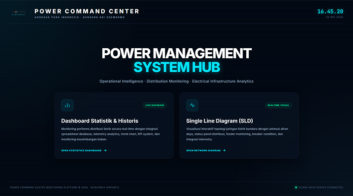

Aviation Infrastructure
PT Aviasi Pariwisata Indonesia (InJourney Airports)
Adi Soemarmo International Airport — Electrical Monitoring System
A centralized Power Command Center that gives the airport's engineering team a single view of the electrical distribution network — live telemetry, historical trends, and an interactive single-line diagram of the full grid topology.
- Real-time single-line diagram with feeder status and breaker condition
- Historical telemetry logs with per-node voltage, current, and power factor
- Live status tracking across every terminal and distribution panel